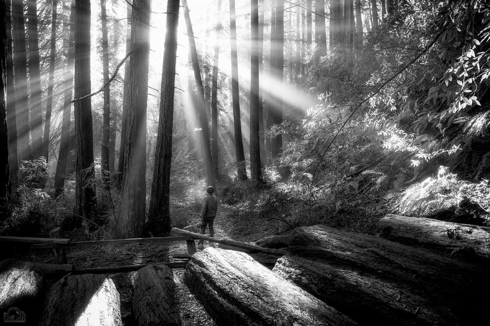

HSL / Color and B&W Mix
Change one color without touching the others: make greens more golden, calm down orange skin, darken a blue sky. In Black & White, the same panel decides how bright each color becomes in gray.
The eight colors
Red, Orange, Yellow, Green, Aqua, Blue, Purple and Magenta each have three sliders. Neighboring colors blend smoothly, and grays and whites are never affected.
- Show Hue, Saturation or Luminance one at a time, or All 24 sliders.
- Each track is painted with the colors that end of the slider gives, so you can see which way to drag.
Hue
Shifts a color toward its neighbors. Green toward yellow gives autumn foliage; blue toward aqua gives tropical water.
Saturation
Makes one color stronger or weaker. Turning down Orange and Red calms skin and wood; turning up Blue deepens a sky.
Luminance
Makes one color brighter or darker. Darkening Blue makes skies dramatic; lightening Orange brightens faces.
B&W Mix
When Treatment is Black & White (press V), this panel shows the B&W Mix instead of HSL: eight sliders that set how light or dark each color becomes in gray, like colored filters on black and white film.

B&W Mix at 0 Green +90, Yellow +80, Orange −60
Green +90, Yellow +80, Orange −60Classic filters. Darken Blue for a dramatic sky (a red filter). Lighten Orange and Red for smooth skin. Lighten Green and Yellow for bright foliage.
Vibrance and Saturation have no effect in Black & White. Color Grading still works, for toned prints (Sepia, Selenium in the Black & White presets).